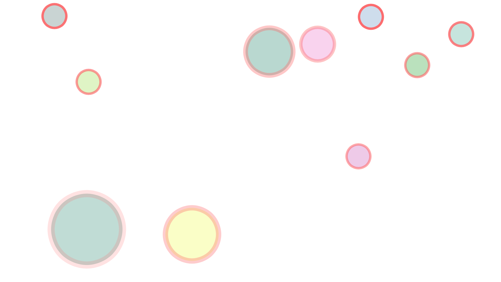

Bacterial Survival with Evolving Algorithms
Yuxi Zhang, Kainan Wang, Tao Yuan
University of California, Los Angeles

Introduction
The goal of this project is to train an AI that can learn survival strategies from the environment. We carefully design an environment for bacteria that does not have trivial strategy to survive. Our training process starts from simple strategies and we apply the trained model as input for the next round to keep it evolving. We adjust the environment with different parameters and observe how it changes the behaviours of bacteria.